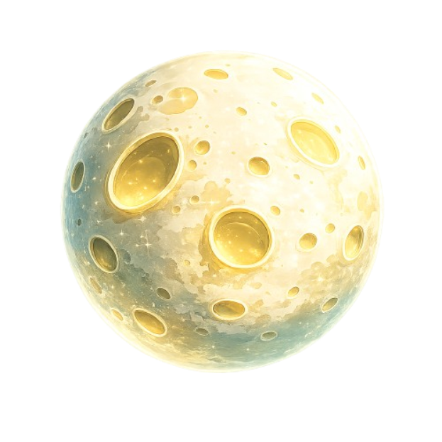

HAPPY FATHER'S DAY

Para mi papá, querido.
Me mostraste el hombre que podía llegar a ser.
Cada día agradezco haber tenido en mi vida un faro de deber, amor y respeto.
Espero que algún día pueda ser siquiera la mitad del hombre que eres tú.
Con todo mi cariño.